D
دليل DokTool الشامل
كل ميزة في التطبيق ولوحة الإدارة، كيف تعمل، ومن يستطيع فعل ماذا — مكتوب لصاحب المشروع.
الإصدار الأول V1 · أكتوبر 2026
كيف تقرأ هذا الدليل؟
واجهة التطبيق ولوحة الإدارة بالفرنسية والإنجليزية. لذلك نكتب أسماء الأزرار والشاشات كما تظهر بالفرنسية بين علامتي « »، مثل « Mot de passe oublié ? »، ثم نشرح معناها بالعربية.
الصور مأخوذة من التطبيق الحقيقي على محاكي أندرويد؛ الأسماء التي تنتهي برموز مثل 3e83e0 هي بيانات تجريبية للاختبار وليست محتوى حقيقياً.
الفهرس
1ما هو DokTool وما الذي ليس عليه
2المكونات الثلاثة وأين تُحفظ البيانات
3أنواع المستخدمين: من يرى ماذا
4التطبيق: البداية، الحساب، الدخول
5التحقق المهني
6الصفحة الرئيسية والبحث
7المكتبة: الوصفات والشهادات المرجعية
8الحاسبات الطبية
9الحمل والرضاعة
10المفضلة، النشاط، الملف الشخصي
11الاشتراك والدفع
12العمل دون اتصال
13الإشعارات والإعدادات
14استرجاع الحساب (المسارات الثلاثة)
15لوحة الإدارة: الدخول والأدوار
16لوحة الإدارة صفحةً صفحة
17الدفع عبر Chargily بالتفصيل
18الرسائل القصيرة SMS
19الخصوصية والأمان
20ما عليك فعله قبل الإطلاق
21مسرد المصطلحات
الفكرة في سطرين
DokTool أداة سريرية سريعة على الهاتف للأطباء والمقيمين وطلبة الطب في الجزائر: مراجع وصفات وشهادات بصيغة PDF، حاسبات طبية موثوقة، ومعلومات الأدوية أثناء الحمل والرضاعة. تديرها أنت وفريقك من لوحة إدارة على الحاسوب، والخادم هو الحَكَم الوحيد في كل قاعدة.
1ما هو DokTool وما الذي ليس عليه
DokTool هو «حقيبة أدوات الطبيب» على الهاتف. ثلاثة استعمالات أساسية:
المراجعابحث ← اعثر على نموذج الوصفة أو الشهادة ← اقرأه بصيغة PDF كمرجع سريري.
الحاسباتاختر الحاسبة ← أدخل القيم ← احسب ← راجع النتيجة ومصدرها العلمي.
الزائرجرّب الوضع التجريبي ← استكشف ← افهم ← اشترك.
ما الذي ليس عليه DokTool (عن قصد)
- ليس ملفاً طبياً للمرضى: لا توجد أي بيانات مرضى في أي مكان.
- لا يكتب وصفات ولا شهادات: النماذج للقراءة فقط، بلا تعديل ولا طباعة ولا تنزيل ولا مشاركة.
- ليس قاعدة أدوية كاملة: الجرعات والتداخلات والمنتجات مؤجلة لما بعد الإصدار الأول. الاستثناء الوحيد هو قسم «الحمل والرضاعة».
- ليس منصة إعلانات ولا شراكات مخابر، ولا «روبوت محادثة».
- لا توجد واجهة عربية داخل التطبيق في الإصدار الأول: الواجهة فرنسية وإنجليزية فقط.
قاعدة ذهبية في التصميم«مقفل ≠ مخفي»: المحتوى المدفوع يظهر للمستخدم مع قفل وشرح لكيفية فتحه، ولا يُخفى. أما الوحدات المؤجلة فلا تظهر أبداً.
2المكونات الثلاثة وأين تُحفظ البيانات
| المكوّن | لمن | ماذا يفعل |
|---|
| تطبيق الهاتف (Flutter، أندرويد و iOS) | الأطباء، المقيمون، الطلبة، والزوار التجريبيون | كل ما يراه المستخدم: البحث، المكتبة، الحاسبات، الحمل والرضاعة، الاشتراك، الإعدادات. |
| لوحة الإدارة Admin Web (متصفح على حاسوب ≥ 1024 بكسل) | أنت وفريقك فقط | مراجعة التحقق المهني، رفع ملفات PDF، تأليف ومراجعة الحاسبات ومحتوى الحمل، الأسعار، المالية، الصلاحيات، السجلات. |
| الخادم API (NestJS) | يخدم التطبيق ولوحة الإدارة | هو من يقرر كل شيء: من يرى ماذا، الدفع، الرموز، القواعد. التطبيق لا يقرر شيئاً وحده. |
أين تُحفظ البيانات
- قاعدة البيانات PostgreSQL: الحسابات، الاشتراكات، المعاملات، المحتوى النصي، السجلات.
- Cloudflare R2 (تخزين ملفات) بحاويتين خاصتين:
- doktool-content: ملفات PDF المرجعية وصور الملف الشخصي.
- doktool-private: وثائق التحقق المهني وصور استرجاع الحساب.
لا يوجد أي ملف عام: كل قراءة عبر رابط موقّع مؤقت (10 دقائق للمراجع، 60 ثانية للوثائق الحساسة).
- الهاتف: نسخة دون اتصال من المحتوى المسموح، والإعدادات، والمفضلة. رموز الدخول في الخزنة الآمنة للهاتف (Keychain/Keystore).
المزوّدون الخارجيون
| الخدمة | المزوّد | الحالة |
|---|
| الدفع بالبطاقة (CIB و الذهبية Edahabia) | Chargily Pay (و SATIM مباشرة كبديل جاهز) | مبني ومُختبَر؛ ينقصه حسابك ومفاتيحك. |
| رسائل الرموز بالبريد | أي خادم SMTP | إلزامي في الإنتاج. |
| رسائل الرموز بالهاتف SMS | Infobip و/أو Twilio | مبني ومُختبَر؛ ينقصه حسابك. |
| الحماية والشبكة | Cloudflare | يُنصح به أمام الخادم ولوحة الإدارة. |
3أنواع المستخدمين: من يرى ماذا
الخادم يحسب لكل شخص «مستوى وصول» واحداً، والتطبيق يعرضه كما هو. المستويات الخمسة:
| المستوى | من هو | الحاسبات | ملفات PDF المرجعية | الحمل والرضاعة | دون اتصال | الاشتراك |
|---|
| تجريبي DEMO | زائر بلا حساب | عينات | عينات | عينات | لا | يحتاج حساباً |
| طالب STUDENT | طالب طب | نعم | العناوين + العينات | الأسماء + العينات | نعم | مجاني دائماً |
| مهني غير مشترك | طبيب أو مقيم بلا اشتراك | عينات | عينات | عينات | لا | بعد التحقق |
| مهني مشترك PRO | طبيب أو مقيم مُوثَّق ومشترك | الكل | الكل | الكل | نعم | تجديد يدوي |
| مقيَّد RESTRICTED | حساب في طور الإعداد أو مُعلَّق | لا | لا | لا | لا | — |
قرارات صاحب المشروع المطبَّقة
- الطلبة مجاناً: الحاسبات مفتوحة، ونماذج الوصفات والشهادات تظهر بعناوينها فقط (مقفلة) ما عدا العينات.
- الطبيب غير المشترك يرى مجموعة العينات نفسها التي يراها الزائر، لكن بحساب حقيقي.
- لا دفع قبل التحقق المهني: زر الدفع لا يُفتح إلا بعد قبول وثائق المهنة.
- الوضع التجريبي بلا تسجيل، بلا مدة محددة، ولا يطلب أي معلومة اتصال.
- الصيادلة ومهنيو الصحة الآخرون خارج الإصدار الأول.
العينات (demoSample)أنت من يختار العينات من لوحة الإدارة: أي ملف PDF أو حاسبة أو مادة دوائية تضع عليها علامة «عينة» تصبح ظاهرة للزوار وغير المشتركين.
4التطبيق: البداية، الحساب، الدخول
شاشة الترحيب
ثلاثة أزرار: « Créer un compte » (إنشاء حساب)، « Se connecter » (الدخول)، و« Explorer la démo » (تجربة بلا تسجيل؛ يختار الزائر «طبيب» أو «طبيب مقيم» ويرى المحتوى الحقيقي للعينات).
إنشاء الحساب
- البريد الإلكتروني أو رقم الهاتف (يقبل 0661 23 45 67 ويحوّله إلى +213…)، الاسم، اللقب، ولاية العمل، كلمة مرور (8 أحرف على الأقل مع مؤشر قوة)، والموافقة على الشروط وسياسة الخصوصية.
- يصل رمز من 6 أرقام صالح 10 دقائق. إعادة الإرسال بعد 60 ثانية، 5 مرات كحد أقصى. 3 أخطاء تقفل الرمز 10 دقائق.
- بعد التأكيد يختار الشخص دوره: Médecin (طبيب)، Médecin résident (مقيم)، أو Étudiant en médecine (طالب).
تسجيل الدخول
- بالبريد أو الهاتف (أيهما مسجّل ومؤكَّد) مع كلمة المرور.
- 5 كلمات مرور خاطئة تقفل الحساب 15 دقيقة، مع حد للمحاولات حسب عنوان الشبكة.
- كل جهاز «جلسة» مستقلة تدوم حتى 180 يوماً، ويمكن إنهاؤها في أي لحظة. الجديد: إنهاء الجلسة يسري فوراً (في الطلب التالي) بدل الانتظار 15 دقيقة.
- رابطان تحت كلمة المرور: « Mot de passe oublié ? » و« Accès perdu ? » (انظر الفصل 14).
5التحقق المهني
التحقق هو ما يحوّل حساباً عادياً إلى طبيب أو مقيم أو طالب «موثَّق». يتم مرة واحدة ويُجدد عند انتهاء صلاحيته.
ماذا يرسل الشخص
- الهوية: صورة الوجه الأمامي (والخلفي عند الحاجة) لبطاقة التعريف أو جواز السفر أو بطاقة الطالب.
- المهنة: للطبيب إثبات التسجيل في عمادة الأطباء (رقم التسجيل يُخفى جزئياً في كل مكان)، الاختصاص، ومكان العمل؛ للمقيم شهادة الإقامة؛ للطالب إثبات التسجيل الجامعي والسنة.
الكاميرا داخل التطبيق ترسم إطاراً للوثيقة، وتتحقق على الهاتف نفسه من وضوح الصورة ومن ظهور الاسم (دون إرسال أي نص للخادم). يمكن أيضاً اختيار ملف PDF أو صورة.
دورة حياة الملف
لم يبدأيحضّر الوثائق
←
مُرسلفي طابور المراجعة
←
قيد المراجعةمراجِع أخذ الملف
←
مُوثَّقأو مرفوض مع السبب
- الرد المعتاد خلال 24 ساعة؛ لوحة الإدارة تنبّه للملفات المتأخرة.
- عند الرفض يرى الشخص السبب (صورة غير مقروءة، وثيقة منتهية، اسم غير مطابق…) ويعيد الخطوة المطلوبة فقط.
- بعد رفضين يمكنه الطعن، ويفصل فيه مراجِع آخر.
- تُحذف الوثائق بعد 24 شهراً من القرار، والملفات المهجورة بعد 90 يوماً.
- تذكير قبل انتهاء صلاحية التحقق بـ 60 ثم 14 يوماً.
6الصفحة الرئيسية والبحث
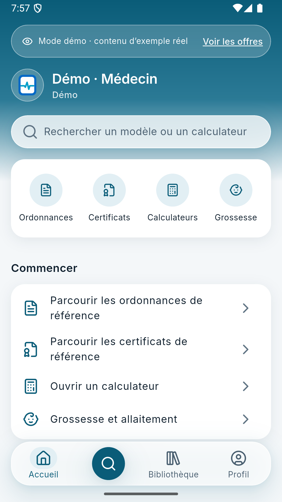
الرئيسية (وضع تجريبي)
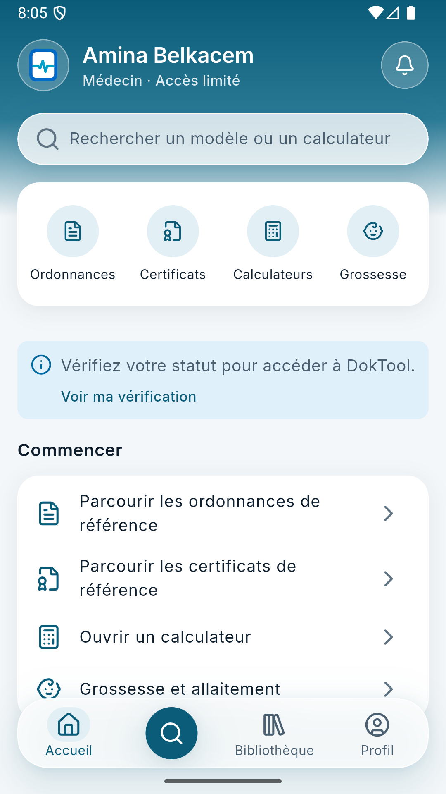
الرئيسية (حساب طبيب)
الرئيسية
- رأس متدرج بالأزرق المائي مع تأثير زجاجي، فيه الاسم والدور، جرس الإشعارات، وحقل البحث.
- أربعة اختصارات: Ordonnances (الوصفات)، Certificats (الشهادات)، Calculateurs (الحاسبات)، Grossesse (الحمل).
- قسم « Commencer » للمستخدم الجديد، ثم «الأخيرة» و«المفضلة».
- في الوضع التجريبي يظهر شريط « Mode démo » مع رابط « Voir les offres ».
- شريط التنقل السفلي العائم: الرئيسية، البحث (الزر الدائري)، المكتبة، الملف الشخصي.
البحث
- يبحث في الوصفات والشهادات والحاسبات ومواد الحمل معاً، بالفرنسية والإنجليزية، دون حساسية للنبرات (é/e).
- الترتيب: التطابق التام ← بداية الكلمة ← المرادفات ← التقريب للأخطاء الإملائية.
- يفهم النية: كلمة مثل «calcul» أو «grossesse» تقدّم الفئة المناسبة.
- عوامل تصفية حسب النوع، وآخر عمليات البحث محفوظة على الهاتف فقط.
- نص البحث لا يُرسل أبداً إلى الإحصاءات.
7المكتبة: الوصفات والشهادات المرجعية
المكتبة أقسام بأزرار دائرية: Ordonnances، Certificats، Calculateurs، Grossesse. كل عنصر يعرض حالته: مفتوح، أو Pro (يحتاج اشتراكاً)، أو عينة.
عارض PDF
- يفتح ملف PDF الذي رفعته أنت من لوحة الإدارة: نموذج مرجعي يقرأه الطبيب.
- قراءة فقط: لا تعديل، لا حقل للمريض، لا تصدير، لا طباعة، لا مشاركة، لا تنزيل، ولا حتى تحديد النص.
- لغة الملف مستقلة عن لغة الواجهة.
- يتحقق الهاتف من بصمة الملف (SHA-256) قبل عرضه وقبل حفظه دون اتصال، فلا يُعرض ملف مُعدَّل.
- زر المفضلة على كل ملف، وسجل «آخر ما فتحت».
ما يحدده المدير لكل ملفالعنوان بالفرنسية (يُملأ تلقائياً من اسم الملف)، عنوان إنجليزي اختياري، علامة «عينة» (demoSample)، والحالة (مُفعَّل / مُعطَّل). لا يوجد مستوى وصول خاص بكل ملف: القاعدة واحدة للجميع حسب الجدول في الفصل 3. استبدال الملف ينشئ نسخة جديدة تلقائياً وتبقى السابقة في السجل.
8الحاسبات الطبية
كل حاسبة «تعريف» دقيق: المدخلات وأنواعها، الوحدات (مع تحويل موثّق بين الوحدات، مثل mg/dL و µmol/L)، والنطاقات المقبولة، والمعادلة، وفئات تفسير النتيجة، والحدود، والمصادر العلمية.
تجربة الطبيب
- يُدخل القيم. التحقق عند الخروج من الحقل وليس مع كل حرف.
- القيم خارج النطاق المعقول تُرفض، والقيم غير المعتادة تُنبَّه عليها.
- لا تظهر أي نتيجة ما دام هناك مدخل غير صالح.
- تظهر النتيجة مع فئة التفسير (مثلاً: طبيعي / متوسط / مرتفع)، والمصدر العلمي، والحدود.
ضمانات السلامة
- كل حاسبة لها مصدر أولي واحد على الأقل وحالات اختبار.
- المؤلف ≠ المراجع: من كتب الحاسبة لا يستطيع مراجعتها ولا نشرها.
- النسخة المنشورة غير قابلة للتعديل: أي تغيير يعني نسخة جديدة تُراجَع من جديد.
- محرّكا حساب متطابقان: واحد في الخادم (المرجع) وواحد في الهاتف للعمل دون اتصال. الهاتف يختبر كل نسخة بحالاتها قبل استعمالها.
- لا يُولَّد أي معادلة بالذكاء الاصطناعي، ولا تُخترع معادلة أبداً.
9الحمل والرضاعة Grossesse · Allaitement
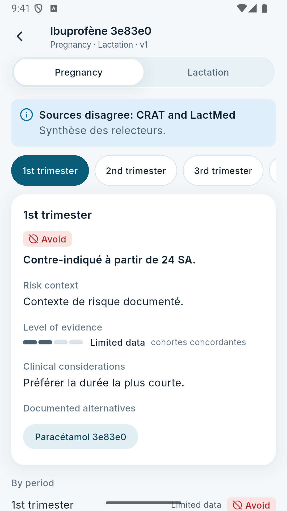
ملف مادة (بيانات تجريبية)
لكل مادة دوائية ملف من جزأين، يكتبه الطبيب المؤلف من لوحة الإدارة:
الحمل Grossesse
أربع فترات: الثلث الأول، الثاني، الثالث، و«حول الولادة». لكل فترة:
- التوجيه: مضاد استطباب / يُتجنَّب / استعمال عرضي.
- شرح التوجيه وسياق الخطر.
- مستوى الدليل (من 0 إلى 4) والفئة المدروسة.
- اعتبارات سريرية.
الرضاعة Allaitement
- التوجيه ونصه.
- الجرعة النسبية للرضيع، ونصف عمر الدواء عند الأم.
- الآثار المُبلَّغ عنها، والفئات الخاصة (رضيع خديج…).
- مستوى الدليل، والاعتبارات.
- البدائل الموثَّقة تظهر كأزرار تفتح ملف البديل مباشرة.
- عند تعارض المصادر (مثلاً CRAT و LactMed) يظهر تنبيه يذكر المصدرين والخلاصة.
- قاعدة صارمة: لا يوجد حكم «آمن / غير آمن»؛ التوجيه ومستوى الدليل منفصلان دائماً.
- زر « Signaler une erreur » يرسل ملاحظة إلى لوحة الإدارة (قسم البلاغات).
دورة التأليف (مهمة للطبيب الذي سيتواصل معك)
1. المادةإنشاء المادة (الاسم بالفرنسية والإنجليزية)
←
2. المصادرإضافة المراجع (CRAT، LactMed، مقالات…)
←
3. نسخةكتابة الفترات والرضاعة وربط مصدر على الأقل، ثم «إرسال للمراجعة»
←
4. المراجعةمدير آخر يوافق أو يطلب تعديلات
←
5. النشرتظهر في التطبيق؛ النسخة السابقة تبقى حتى الموافقة
التحديثات المتكررةبما أن محتوى الطبيب سيتغيّر كثيراً، كل تعديل نسخةٌ جديدة، ولا يُمس المنشور إلا بعد الموافقة. تحتاج حسابَين: CALCULATOR_EDITOR للمؤلف وCLINICAL_REVIEWER للمراجع.
10المفضلة، النشاط، الملف الشخصي
- المفضلة: نجمة على أي ملف أو حاسبة أو مادة، تظهر في الرئيسية وفي « Activité et favoris ».
- النشاط: آخر الملفات والحاسبات التي فُتحت، لتسهيل العودة إليها. (لا تُحفظ القيم المُدخلة في الحاسبات أبداً.)
- الملف الشخصي: صورة (يعاد ترميزها على الخادم، 512 بكسل، دون بيانات وصفية)، نبذة قصيرة، الاختصاص ومكان العمل. يمكن تعديلها من « Modifier ».
- من الملف الشخصي: الاشتراك، حالة التحقق، الإشعارات، الإعدادات، وتسجيل الخروج.
11الاشتراك والدفع
اشتراك واحد هو DokTool Pro بخطتين (شهرية وسنوية) تحدد أنت أسعارهما. للأطباء والمقيمين الموثَّقين فقط.
رحلة الدفع خطوة بخطوة
العروض« Voir les offres »: ما يشمله وما لا يشمله، المدة، السعر
←
الملخصالخطة، السعر، الفترة، طريقة الدفع (CIB أو الذهبية)، التجديد اليدوي
←
الإقرار«فهمت ما يشمله DokTool Pro. الدفع غير قابل للاسترجاع.»
←
صفحة Chargilyإدخال البطاقة في صفحة الدفع الآمنة
←
النتيجةتأكيد من الخادم مباشرة، والاشتراك يُفعَّل فوراً
- يختار الشخص نوع البطاقة فقط (CIB أو Edahabia)؛ الخادم يختار المزوّد. DokTool لا يرى البطاقة أبداً.
- السعر المعروض هو ما يُدفع تماماً: رسوم Chargily على DokTool وليست على الطبيب.
- لا تُصدّق نتيجة الدفع من المتصفح أبداً: الخادم يسأل Chargily مباشرة، عند العودة من الصفحة وعند وصول إشعار Chargily الموقّع، ومهمة دورية كل 10 دقائق للحالات العالقة.
- دفع لم يكتمل خلال 60 دقيقة يُلغى تلقائياً.
التجديد والانتهاء
| القاعدة | القيمة |
|---|
| التجديد | يدوي فقط؛ يُفتح قبل 14 يوماً من نهاية الفترة ويمدّها من تاريخ نهايتها. |
| التذكير | إشعار قبل 14 يوماً ثم 3 أيام (بلا لافتات حمراء ولا عدّ تنازلي). |
| فترة السماح | 7 أيام بعد النهاية مع بقاء الوصول، برسالة هادئة. |
| عدم التجديد | زر « Ne pas renouveler »: يبقى الوصول حتى نهاية الفترة. |
| الاسترجاع | لا يوجد استرجاع ولا زر ولا حالة له. التصحيح الاستثنائي عبر لوحة الإدارة فقط وبموافقة مديرَين. |
حالتان يُسجَّل فيهما المال دون فتح الوصول
- إذا حُذف الحساب قبل اكتمال الدفع.
- إذا كان المبلغ المستلم أقل من السعر.
يُسجَّل الدفع كـ «ناجح» للمحاسبة، ويُكتب خطأ في السجل لتعالجه من لوحة الإدارة.
12العمل دون اتصال
لكل حساب حقيقي يحق له ذلك (المشتركون والطلبة):
- ملفات PDF المسموح بها، والنسخ المنشورة من الحاسبات، ومواد الحمل، تُحفظ على الهاتف.
- المفضلة والنشاط والإعدادات تعمل دون اتصال.
- صفحة « Données et hors ligne » تعرض: إصدار البيانات، هل المعروض «محفوظ» أم «مباشر»، ووجود تحديث متاح، والمساحة المستعملة.
- الحاسبات دون اتصال تستعمل محرك الهاتف بعد أن يختبر كل نسخة بحالاتها.
- الزائر التجريبي والطبيب غير المشترك: لا تخزين دون اتصال.
13الإشعارات والإعدادات
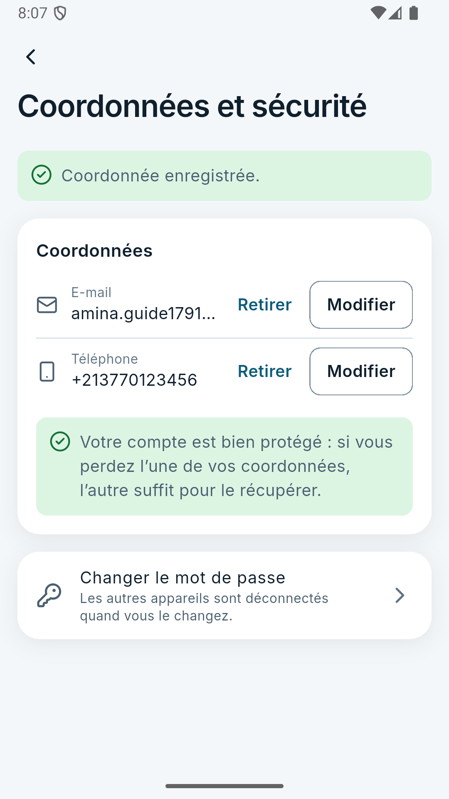
الإحداثيات والأمان
الإشعارات
داخل التطبيق (الجرس): قرارات التحقق، انتهاء الصلاحية، تفعيل الاشتراك وتذكير التجديد وفترة السماح، وإشعارات الأمان (تغيير كلمة المرور، إضافة أو إزالة وسيلة اتصال، طلب استرجاع للحساب). تُحدَّث القائمة كلما فُتحت، ويمكن سحبها للأسفل للتحديث.
الإعدادات Paramètres
- المظهر: فاتح، داكن، أو حسب الجهاز.
- اللغة: الفرنسية أو الإنجليزية، فوراً.
- البيانات ودون اتصال (الفصل 12).
- الإحداثيات والأمان « Coordonnées et sécurité » — جديد:
- البريد والهاتف معاً: أضف أو غيّر أو احذف. كل تغيير يطلب كلمة المرور الحالية، والعنوان الجديد يُثبَت برمز يُرسل إليه.
- رسالة خضراء «حسابك محمي جيداً» عندما يكون البريد والهاتف مؤكَّدين معاً، وإلا نصيحة بإضافة الناقص.
- «تغيير كلمة المرور»: يبقى هذا الجهاز متصلاً، وتُفصل الأجهزة الأخرى.
- إن طلب أحدٌ استرجاع الحساب، يظهر تنبيه مع زر « Ce n’est pas moi » (لستُ أنا) لإلغائه فوراً.
- حذف الحساب « Supprimer mon compte »: بكلمة المرور، نهائي. يمحو البيانات الشخصية والوثائق فوراً، ويُنهي الاشتراك دون استرجاع. لا تبقى إلا سجلات المدفوعات المطلوبة محاسبياً، دون أي معلومة شخصية.
14استرجاع الحساب: المسارات الثلاثة
طلبتَ أن يكون استرجاع الحساب سهلاً. من شاشة الدخول، الرابط « Accès perdu ? » يعرض ثلاث حالات، ولكل حالة أقصر طريق:
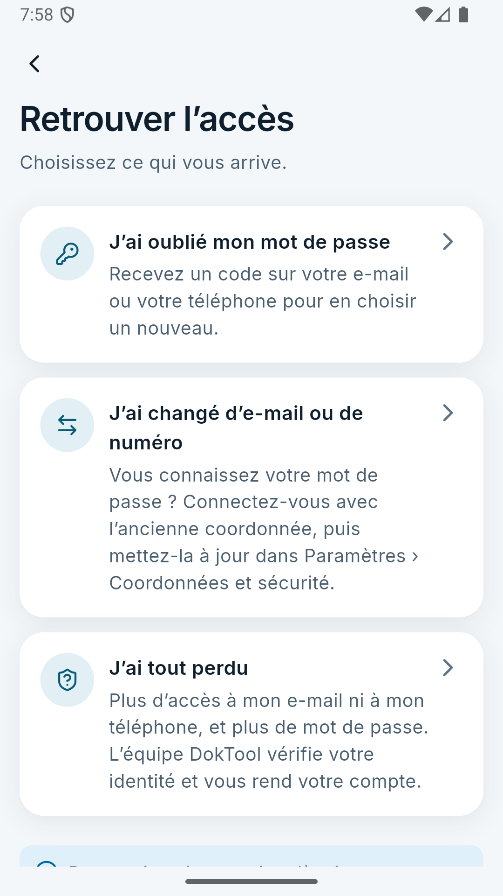
«أين المشكلة؟»
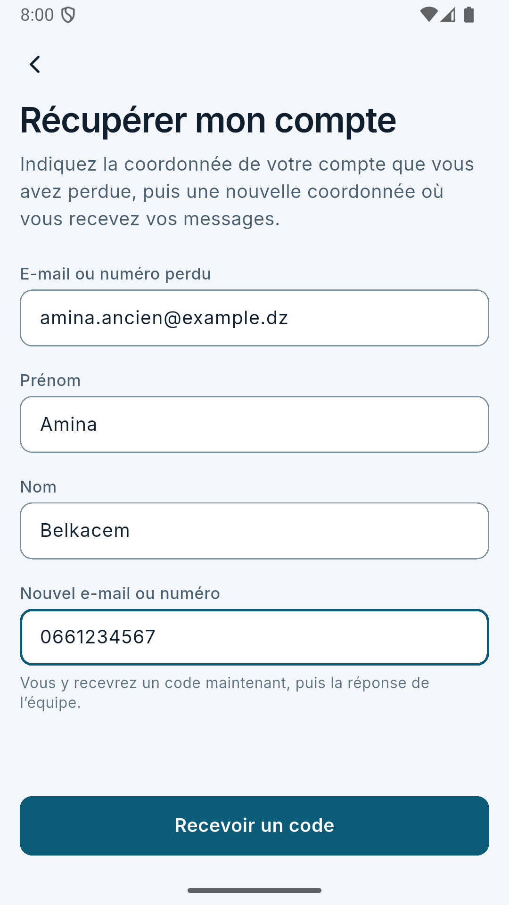
طلب الاسترجاع
| الحالة | الحل | المدة |
|---|
| نسيتُ كلمة المرور | « Mot de passe oublié »: رمز على البريد أو الهاتف، ثم كلمة مرور جديدة. تُفصل كل الأجهزة ويصل إشعار أمان. | دقيقة واحدة |
| غيّرتُ بريدي أو رقمي لكني أعرف كلمة المرور | الدخول بالعنوان القديم وكلمة المرور، ثم تحديثه من «الإحداثيات والأمان». | دقيقتان |
| فقدتُ كل شيء (البريد والهاتف وكلمة المرور) | الاسترجاع المُساعَد (أدناه). | حتى 72 ساعة + 24 ساعة أمان |
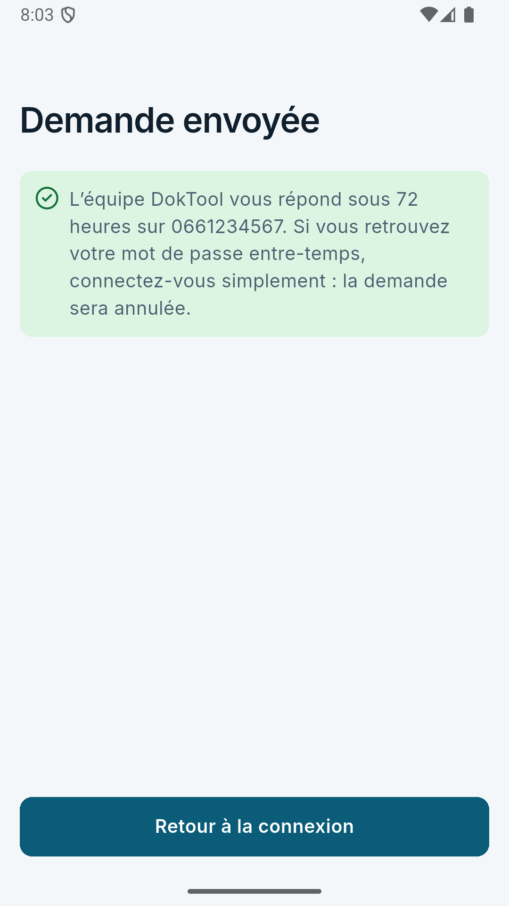
«تم إرسال الطلب»
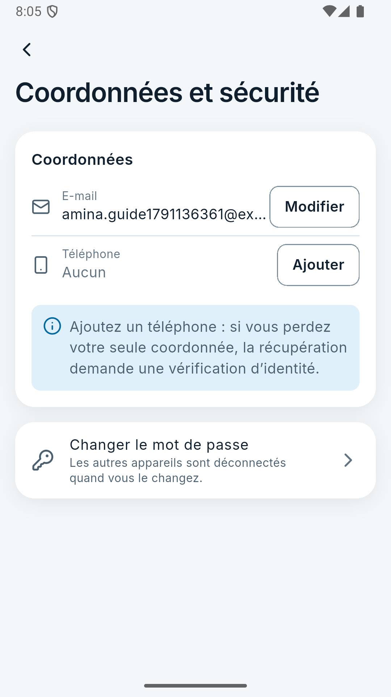
نصيحة إضافة الهاتف
الوقاية أفضلمن لديه بريد وهاتف مؤكَّدان لا يحتاج أحداً أبداً: أحدهما يكفي لاسترجاع الآخر. لذلك ينصح التطبيق بإضافة الناقص.
الاسترجاع المساعَد خطوةً بخطوة
1. الطلبالعنوان المفقود + الاسم واللقب + عنوان جديد
←
2. الرمزرمز يُرسل إلى العنوان الجديد ليُثبت أنه للشخص نفسه
←
3. صورتانبطاقة التعريف + صورة شخصية (سيلفي) مع البطاقة
←
4. الإرساليُبلَّغ صاحب الحساب على عناوينه الحالية
5. المراجعةفريقك يقارن الصورتين بالحساب في لوحة الإدارة
←
6. انتظار 24 ساعةيمكن لصاحب الحساب الحقيقي الإلغاء بمجرد الدخول أو بزر «لستُ أنا»
←
7. التطبيقالعنوان الجديد يصبح الوحيد، كلمة المرور تُعطَّل، كل الأجهزة تُفصل
←
8. كلمة مرور جديدةعبر «نسيتُ كلمة المرور» بالعنوان الجديد
لماذا هو آمن رغم سهولته
- العنوان الجديد يُثبت برمز قبل أي شيء، و«رمز الاسترجاع» يبقى في ذاكرة الهاتف فقط ويصلح ساعة واحدة.
- الجواب نفسه سواء وُجد الحساب أم لا، فلا يمكن معرفة من لديه حساب.
- صاحب الحساب يُبلَّغ عند الطلب وعند الموافقة، ويستطيع الإيقاف في أي لحظة خلال الـ 24 ساعة.
- الصور في الحاوية الخاصة، لا يراها إلا فريق التحقق (رابط 60 ثانية مع علامة مائية باسم المراجِع، وكل مشاهدة مسجّلة)، وتُحذف بعد 30 يوماً من القرار.
- حدود: 5 طلبات لكل عنوان شبكة في الساعة، و3 يومياً لكل عنوان مفقود ولكل عنوان جديد.
15لوحة الإدارة: الدخول والأدوار
الدخول
- أول مدير عام يُنشأ من سطر الأوامر على الخادم:
npm run admin:create -w @doktool/api -- --email ... --name "..."
- الدخول بالبريد وكلمة المرور، ثم رمز TOTP إلزامي من تطبيق مصادقة (Google Authenticator، Microsoft Authenticator…). عند أول دخول يُعرض رمز QR للربط.
- الجلسة في «كعكة» آمنة لا تقرأها الصفحات، مع حماية من الطلبات المزوّرة.
الأدوار الجاهزة (Presets)
| الدور | ماذا يستطيع |
|---|
| SUPER_ADMIN | كل شيء، بما فيه الموافقة على التعديلات المالية الاستثنائية. أنت. |
| VERIFICATION_REVIEWER | طابور التحقق واتخاذ القرار، واسترجاع الحسابات. مشاهدة الوثائق تُمنح مؤقتاً (ساعتان افتراضياً). |
| LIBRARY_MANAGER | رفع ملفات PDF وتعديلها وتعطيلها. |
| CALCULATOR_EDITOR | تأليف مسودات الحاسبات وملفات الحمل والرضاعة. |
| CLINICAL_REVIEWER | مراجعة ونشر الحاسبات وملفات الحمل، لكن ليس ما كتبه بنفسه. |
| FINANCE_ADMIN | المالية والمعاملات والمصاريف والتقارير. |
| ANALYST | الإحصاءات وتصديرها. |
فصل المهام (مفروض في الخادم)
- المؤلف ≠ المراجع.
- من يطلب تعديلاً مالياً ≠ من يوافق عليه.
- لا حساب يجمع صلاحيات المالية مع صلاحيات المحتوى السريري.
- لا يستطيع مدير تعديل صلاحياته بنفسه.
- كل قرار يطلب «سبباً» يُكتب في سجل التدقيق.
16لوحة الإدارة صفحةً صفحة
القائمة الجانبية تُظهر لكل مدير الصفحات التي تسمح بها صلاحياته فقط.
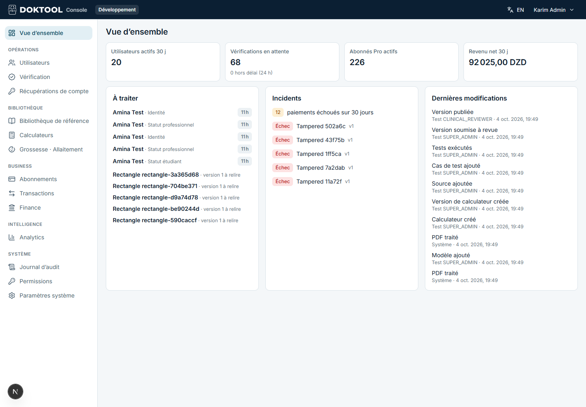
نظرة عامة (بيانات اختبار)
نظرة عامة Vue d’ensemble
المستخدمون النشطون، ملفات التحقق المنتظرة والمتأخرة عن 24 ساعة، المهنيون المشتركون، صافي الإيرادات، «ما ينتظرك» حسب صلاحياتك، الحوادث (مدفوعات فاشلة أو عالقة)، وآخر التغييرات.
المستخدمون Utilisateurs
بحث وتصفية، ثم درج تفاصيل بخمس علامات: الملف، الوصول (المستوى المحسوب وسببه)، الاشتراك، النشاط، السجل. الإجراءات (بسبب مكتوب): تعليق الحساب أو إعادته، وتسجيل الخروج من كل الأجهزة (فوري).
التحقق Vérification
طابور حسب الحالة (الأقدم أولاً) مع شارة 24 ساعة. المراجِع «يأخذ» الملف فلا يعمل عليه اثنان معاً. يرى الملخص، والوثائق في عارض مقيَّد (60 ثانية، علامة مائية، دون تنزيل أو نسخ أو طباعة)، والسجل. القرارات: قبول (مع تاريخ انتهاء الوثيقة اختيارياً)، رفض (سبب من قائمة + ملاحظة تظهر للشخص)، أو إعادة الملف للطابور. الطعون تذهب إلى مراجِع آخر.
استرجاع الحسابات Récupérations de compte — جديد
علامات: للمعالجة، مقبولة (مهلة 24 ساعة)، مطبَّقة، مرفوضة، ملغاة. لكل طلب جدول مقارنة: «المُصرَّح به» مقابل «ما في الحساب» (الاسم، العناوين)، تاريخ إنشاء الحساب، الولاية، وحالة التحقق. ثم زرّا الصورتين (عارض مقيَّد) وقرار «قبول» بملاحظة أو «رفض» بسبب: صور غير مقروءة، الهوية لا تطابق، السيلفي لا يطابق، لا يوجد حساب، سبب آخر.
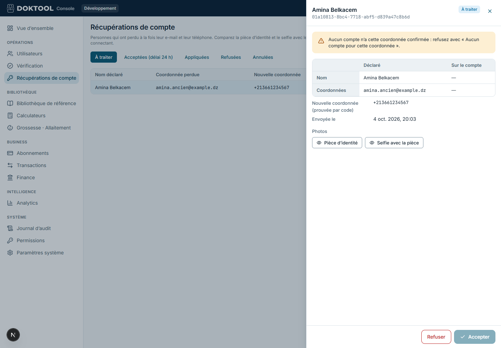
مراجعة طلب استرجاع: المقارنة، الصورتان، القرار
المكتبة المرجعية Bibliothèque de référence
صفحتان (الوصفات والشهادات). رفع PDF (حتى 20 ميغابايت) مباشرة إلى التخزين الآمن، العنوان، العينة، التفعيل والتعطيل، استبدال الملف بنسخة جديدة، ومعاينة.
الحاسبات Calculateurs
القائمة والحالات (مسودة، للمراجعة، منشورة، متقاعدة). صفحة الحاسبة: التعريف (محرر منظَّم أو JSON)، المصادر، حالات الاختبار وتشغيلها، بوابات النشر (مصدر أولي، مراجِع مختلف، كل الاختبارات ناجحة)، المستوى (طالب / مهني)، والعينة.
الحمل والرضاعة Grossesse · Allaitement
ثلاث علامات: المواد، المصادر، البلاغات. صفحة المادة: النسخ وحالاتها، المحرر (فرنسية/إنجليزية لكل حقل)، معاينة «كما يراها الطبيب»، الإرسال للمراجعة، الموافقة أو طلب التعديل، وإظهار المادة أو إخفاؤها.
الاشتراكات Abonnements
قائمة المشتركين وحالاتهم، وكتالوج الخطط: كل تغيير سعر يُنشئ «نسخة» جديدة من الخطة (السعر بالدينار الكامل، 50 دج على الأقل)، مع ما تشمله وما لا تشمله، والجمهور (أطباء و/أو مقيمون). زر بدء البيع أو إيقافه.
المعاملات Transactions
كل محاولة دفع برقمها DT-2026-000123: الحالة، المبلغ، «القناة» (مثلاً «Chargily · CIB»)، الرسوم، الصافي، وتفاصيل المزوّد. المعاملة النهائية لا تُعدَّل ولا تُحذف أبداً؛ التصحيح الوحيد هو «تعديل استثنائي» يطلبه مدير عام ويوافق عليه مدير آخر.
المالية Finance
الإيراد الإجماليكل المدفوعات الناجحة
−
رسوم الدفعالفعلية من Chargily أو المقدَّرة
=
الإيراد الصافي
−
المصاريف التشغيليةخوادم، مراجعة سريرية، دعم…
=
الربح الصافيفي كتلة منفصلة
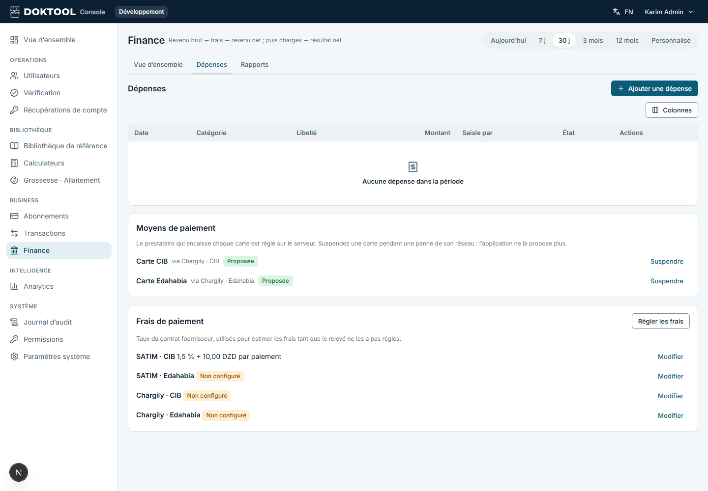
المالية ← المصاريف: وسائل الدفع ومعدلات الرسوم
- وسائل الدفع Moyens de paiement (جديد): لكل بطاقة المزوّد الذي يستلمها، وزر «إيقاف مؤقت» عند عطل شبكة الذهبية أو CIB؛ التطبيق يتوقف عن عرضها فوراً.
- معدلات الرسوم لكل قناة (نسبة + مبلغ ثابت)، تُستعمل للتقدير فقط عندما لا يذكر المزوّد الرسوم الفعلية. Chargily يذكرها، فتُسجَّل فعلية تلقائياً.
- تسوية الرسوم من كشف المزوّد (للمزوّدين الذين لا يذكرونها).
- تقارير CSV: الإيرادات حسب الخطة، الاشتراكات، رسوم المزوّدين.
الإحصاءات Analytics
علامات: الاستعمال، المستخدمون، المكتبة، الحاسبات، الاشتراكات، الوضع التجريبي. أرقام مجهولة الهوية: لا نص بحث، ولا قيم حاسبات، وكل خانة فيها أقل من 10 أشخاص تُخفى. المال يُعرض في المالية فقط.
سجل التدقيق Journal d’audit
كل إجراء إداري وكل حدث حساس: من، ماذا، على أي عنصر، قبل/بعد، السبب، العنوان، الوقت. لا يُعدَّل ولا يُحذف (محمي في قاعدة البيانات). تصفية وتصدير لمن يملك الصلاحية.
الصلاحيات Permissions
إنشاء المديرين بدور جاهز أو صلاحيات مخصصة (مع فرض فصل المهام)، منح مؤقت لمشاهدة الوثائق، إيقاف مدير، وإعادة ضبط مصادقته.
إعدادات النظام Paramètres système
القوائم المرجعية: الاختصاصات، المؤسسات (حسب الولاية)، الجامعات. تُستعمل في التسجيل والتحقق.
17الدفع عبر Chargily بالتفصيل
اخترتَ Chargily Pay لأنه الأسهل في الحصول عليه. يقبل بطاقات CIB (شبكة SATIM) والذهبية Edahabia (بريد الجزائر).
ما الذي بُني
- طبقة مزوّدين قابلة للتوسعة: كل مزوّد «محوّل» واحد في الخادم. Chargily أولاً، وSATIM المباشر جاهز كبديل. إضافة مزوّد مستقبلاً لا تمس التطبيق ولا المالية.
- توجيه بالإعدادات: المتغير PAYMENT_GATEWAYS=chargily أو chargily,satim؛ كل بطاقة تذهب لأول مزوّد يقبلها.
- إشعارات Chargily (Webhook) موقّعة بمفتاحك السري ومُتحقَّق منها بايتاً بايتاً. حتى الإشعار الصحيح لا يكفي وحده: الخادم يعيد السؤال من Chargily عن حالة الدفع.
- الرسوم: على DokTool، وتُسجَّل الرسوم الفعلية لكل دفعة تلقائياً.
- الأسعار: بالدينار الكامل، و50 دج على الأقل (شرط Chargily).
ما عليك فعله (التفاصيل في docs/operations/chargily-setup.md)
- إنشاء حساب على pay.chargily.com وتطبيق باسم DokTool.
- من Developers corner انسخ المفتاح السري للاختبار test_sk_….
- في إعدادات الخادم: PAYMENT_GATEWAYS=chargily، CHARGILY_MODE=test، CHARGILY_SECRET_KEY=…، PUBLIC_API_URL=https://api.…
- جرّب دفعاً ناجحاً ودفعاً مرفوضاً ودفعاً متروكاً كما في الدليل.
- بعد توثيق Chargily لشركتك: CHARGILY_MODE=live وlive_sk_….
المفتاح السرييوضع في إعدادات الخادم فقط، لا في التطبيق ولا في لوحة الإدارة ولا في أي ملف داخل المستودع. من يملكه يستطيع إنشاء عمليات دفع وقراءة مدفوعاتك. الخادم يرفض العمل إذا لم يتطابق نوع المفتاح مع الوضع، أو إذا كان الإنتاج في وضع الاختبار.
عند عطللوحة الإدارة ← المالية ← وسائل الدفع ← «إيقاف» البطاقة المعطلة مع ذكر السبب. التطبيق يكتب للأطباء «الدفع غير متاح مؤقتاً، أعد المحاولة لاحقاً».
18الرسائل القصيرة SMS
قلتَ إنك لا تعرف كيف تعمل؛ ببساطة:
الخادميطلب من المزوّد إرسال نص إلى +213…
←
المزوّد(Infobip أو Twilio) يوصله عبر موبيليس وجيزي وأوريدو
←
الفاتورةيدفع DokTool لكل رسالة للمزوّد
- مزوّدان جاهزان: Infobip (قوي في إفريقيا والشرق الأوسط، يسجل اسم المرسل «DokTool») وTwilio (سهل التسجيل). الموصى به: Infobip أولاً وTwilio احتياطياً.
- التبديل التلقائي: إذا تعطل الأول مؤقتاً، يرسل الثاني الرسالة نفسها.
- متى تُرسل رسالة: تأكيد رقم عند التسجيل، نسيان كلمة المرور، إضافة رقم، استرجاع الحساب، وإشعارات الأمان عندما يكون الهاتف هو الوسيلة الوحيدة للحساب.
- بدون مزوّد: يُرفض التسجيل بالهاتف في الإنتاج، ويُطلب البريد بدلاً منه.
الحماية من الاحتيال والفواتير المفاجئة
| الحماية | القيمة الافتراضية |
|---|
| الدول المسموح الإرسال إليها | الجزائر فقط 213 |
| حد لكل رقم | 10 رسائل في اليوم |
| حد للخادم كله | 2000 رسالة في اليوم SMS_DAILY_LIMIT (عدّله حسب ميزانيتك) |
| حدود الرموز | 60 ثانية بين رمزين، 5 إرسالات، 3 أخطاء ثم قفل 10 دقائق |
| السجلات | لا يُكتب النص ولا الرمز أبداً؛ الرقم مُخفى +21366•••••67 |
الإعداد في docs/operations/sms-setup.md.
19الخصوصية والأمان
الحساباتكلمات المرور مشفرة بـ Argon2id، وقفل بعد المحاولات الخاطئة. المصادقة الثنائية TOTP إلزامية للمديرين. الجلسات تُنهى فوراً، وكل تغيير في الأمان يُبلَّغ عنه.
الوثائقفي حاوية خاصة، روابط 60 ثانية، علامة مائية، صلاحية مؤقتة، مشاهدة مسجّلة، وحذف تلقائي (24 شهراً للتحقق، 30 يوماً للاسترجاع).
الماللا بيانات بطاقات عند DokTool. المعاملات لا تُعدَّل ولا تُحذف. الإشعارات موقّعة، ونتيجة الدفع تؤكَّد من المزوّد دائماً.
الإحصاءاتمجهولة الهوية، بلا نص بحث، وبلا قيم حاسبات، وبلا بيانات مرضى. الخانات الصغيرة (أقل من 10 أشخاص) تُخفى.
الهاتفلا نسخ احتياطي سحابي لبيانات التطبيق، ولا اتصال غير مشفر في الإصدار النهائي. لا إعلانات ولا أدوات تتبع خارجية.
الحق في الحذفحذف الحساب من التطبيق بكلمة المرور: يُمحى كل شيء شخصي فوراً، ولا يبقى إلا سجل الدفع المحاسبي دون هوية.
تقرير المخاطر الكامل في docs/security/THREAT-MODEL.md، وأُعيدت مراجعته في 5 أكتوبر 2026 ليشمل الدفع والرسائل والاسترجاع.
20ما عليك فعله قبل الإطلاق
الجزء البرمجي جاهز ومُختبَر. هذا ما ينتظرك (القائمة الكاملة بالإنجليزية في docs/RELEASE-CHECKLIST.md):
الحسابات والاستضافة
- ☐ حسابا المطوّر في Google Play وApple، ومفتاح توقيع أندرويد.
- ☐ خادم إنتاج بقاعدة PostgreSQL 18 ونسخ احتياطي يومي.
- ☐ Cloudflare R2 بحاويتين خاصتين، وCloudflare أمام الخادم ولوحة الإدارة.
- ☐ خدمة بريد SMTP، ومزوّد SMS (Infobip و/أو Twilio)، وحساب Chargily بمفاتيحه.
- ☐ مفاتيح سرية عشوائية قوية لكل متغيرات الخادم.
القانوني والمتاجر
- ☐ نشر صفحتي الشروط وسياسة الخصوصية، وعنوان دعم يُذكر في رسائل الأمان.
- ☐ نماذج «سلامة البيانات» في المتجرين (الإجابات جاهزة في القائمة).
- ☐ صفحات المتجر بالفرنسية والإنجليزية، ولقطات الشاشة، والتصنيف (18+ مهنيون).
المحتوى (من لوحة الإدارة)
- ☐ المدير العام الأول، ثم حسابات الفريق (مؤلف ومراجع للمحتوى السريري).
- ☐ ملفات PDF للوصفات والشهادات، واختيار العينات.
- ☐ الحاسبات (مؤلف + مراجع)، وملفات الحمل والرضاعة مع الطبيب.
- ☐ القوائم المرجعية، وأسعار الخطتين، ومعدلات الرسوم.
اختبارات يدوية على أجهزة حقيقية
- ☐ أول نسخة iOS على جهاز Mac مع Xcode (لم تُبنَ بعد لأن العمل على Windows).
- ☐ مرور بقارئ الشاشة TalkBack وVoiceOver، واستعمال لوحة الإدارة بلوحة المفاتيح فقط.
- ☐ اختبارات Chargily في وضع الاختبار، ثم دفع حقيقي صغير بعد التفعيل.
21مسرد المصطلحات
| كما يظهر في الواجهة | بالعربية |
|---|
| Ordonnance | وصفة طبية (نموذج مرجعي PDF) |
| Certificat | شهادة طبية (نموذج مرجعي PDF) |
| Calculateur | حاسبة طبية |
| Grossesse · Allaitement | الحمل والرضاعة |
| Vérification | التحقق المهني |
| Abonnement · Offres · Payer | الاشتراك · العروض · ادفع |
| Renouveler · Ne pas renouveler | جدّد · لا تجدّد |
| Hors ligne | دون اتصال |
| Coordonnées et sécurité | الإحداثيات (البريد والهاتف) والأمان |
| Accès perdu ? · J’ai tout perdu | فقدتَ الوصول؟ · فقدتُ كل شيء |
| Ce n’est pas moi | لستُ أنا (إلغاء طلب الاسترجاع) |
| Récupérations de compte | طلبات استرجاع الحسابات (لوحة الإدارة) |
| Moyens de paiement | وسائل الدفع |
| Démo · demoSample | الوضع التجريبي · عينة ظاهرة للجميع |
| Pro | محتوى للمشتركين |
| CIB · Edahabia | البطاقة البنكية CIB · البطاقة الذهبية لبريد الجزائر |
| TOTP | رمز من 6 أرقام يتغيّر كل 30 ثانية في تطبيق المصادقة |
| Webhook | إشعار آلي يرسله مزوّد الدفع إلى الخادم |